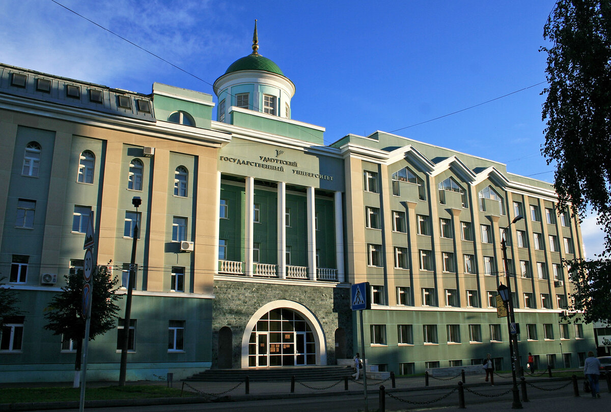

ИМИТИФ / ИВТ / Ирхин Илья
После окончания школы я решил продолжить обучение в высшем учебном заведении. Изучив несколько вариантов, я выбрал Удмуртский государственный университет, поскольку он предлагал программу, которая соответствовала моим интересам и профессиональным целям. Подготовка к поступлению заняла некоторое время: я собрал необходимые документы и внимательно следил за требованиями университета. Благодаря своим усилиям и целеустремленности я успешно прошел и был зачислен на выбранный факультет. Так начался мой путь в Удмуртском государственном университете, который стал важным этапом в моей жизни и профессиональном развитии. >:)